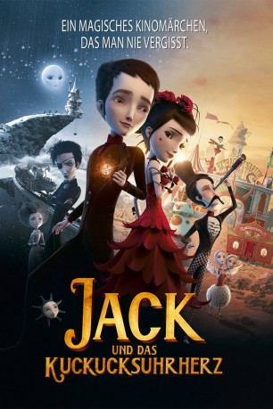

#2689 Jack und das Kuckucksuhrherz
 
 IMDB-Wertung: 7.0 / 10
IMDB-Wertung: 7.0 / 10  Metascore: 56
Metascore: 56 
Am kältesten Tag, den Schottland je sah, kommt der kleine Jack mit gefrorenem Herzen zur Welt. Seine Hebamme Madeleine ersetzt den Eisklumpen kurzentschlossen durch eine Kuckucksuhr und ticktack, bummbumm: Jack kann leben. Drei wichtige Regeln gilt es jedoch fortan für Jack zu beherzigen: niemals an den Zeigern drehen, niemals in Rage geraten und sich niemals verlieben, denn sonst spielt das Uhrwerk verrückt und das kann den Tod für Jack bedeuten. Doch wie schafft man es, sich niemals zu verlieben? Und so kommt es wie es kommen muss: Jack trifft auf die bezaubernde Sängerin Acacia, singt mir ihr ein Liebeslied und bumm: sein Kuckucksuhrherz dreht durch. Kurz darauf kommt er wieder zu sich, aber die Schönheit ist verschwunden. Die Suche nach seiner Angebeteten führt den Jungen zusammen mit dem faszinierenden George Méliès durch ganz Europa, bis er sie schließlich auf einem Rummelplatz bei Sevilla findet. Dort setzt Jack alles dran, das Herz seiner Geliebten für sich zu gewinnen.
Jahr: 2013
Dauer: 92 Minuten
FSK: 6
Land: Frankreich Studio: UFATonspuren: DTS - ,
Untertitel: Deutsch,
Auflösung: 1080p (1920x1040) Größe: 4280 MB
Genre: Drama, Abenteuer, Fantasy, Animation/Trick, Liebe, Musical
Regisseur: Stéphane Berla, Mathias Malzieu, Stéphane Berla
Drehbuch: Mathias Malzieu, Mathias Malzieu, Mathias Malzieu, Mathias Malzieu
Soundtrack: Dionysos
Darsteller:
- Olivia Ruiz als Miss Acacia
 Jean Rochefort als Méliès
Jean Rochefort als Méliès Rossy de Palma als Luna
Rossy de Palma als Luna- Samantha Barks als Miss Acacia
 Stephane Cornicard als Georges Méliès
Stephane Cornicard als Georges Méliès Michelle Fairley als Brigitte Helm
Michelle Fairley als Brigitte Helm- Gregory Monro als Demo Voice
 Richard Ridings als Arthur
Richard Ridings als Arthur- Orlando Seale als Jack
- Mathias Malzieu als Jack
- Grand Corps Malade als Joe
- Babet als Anna
- Marie Vincent als Madeleine #1
- Emily Loizeau als Madeleine #2
- Arthur H. als Arthur
- Dani als Brigitte Helm
- Alain Bashung als Jack l'éventreur
- Cali als L'homme qui pleure / L'homme trmpette
- Chloé Renaud als La jeune mère
 Moon Dailly als La petite fille blonde
Moon Dailly als La petite fille blonde- Jessie Buckley als Luna
- Janet Dibley als Young Mother
- Sophia Ellis als Anna
- Charlie Hayes als Blond Girl
 Steve Nicolson als Crying Man
Steve Nicolson als Crying Man- Harry Sadeghi als Joe
- Howard Samuels als Jack the Ripper
- Barbara Scaff als Madeleine
- Emily Dormer als Two headed woman , uncredited
Datei: X:\Kinder Filme (G-M)\Jack und das Kuckucksuhrherz (2013, FSK6, 1920x1040).mkv seit 03.12.2015
Festplatte: Kinder-Filme+Trick
 Es gibt insgesamt 84 Filme in der Gruppe 'Kinder Filme (G-M)'
Es gibt insgesamt 84 Filme in der Gruppe 'Kinder Filme (G-M)'